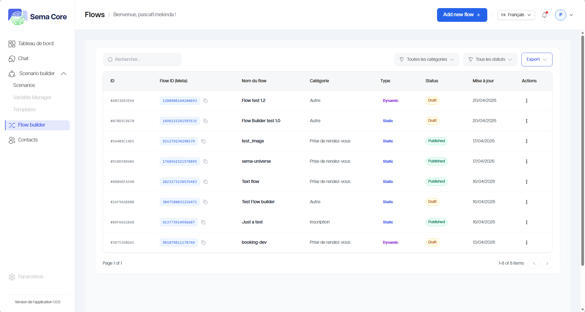
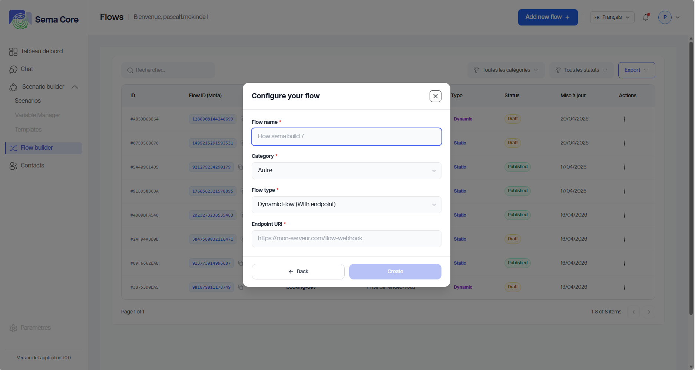
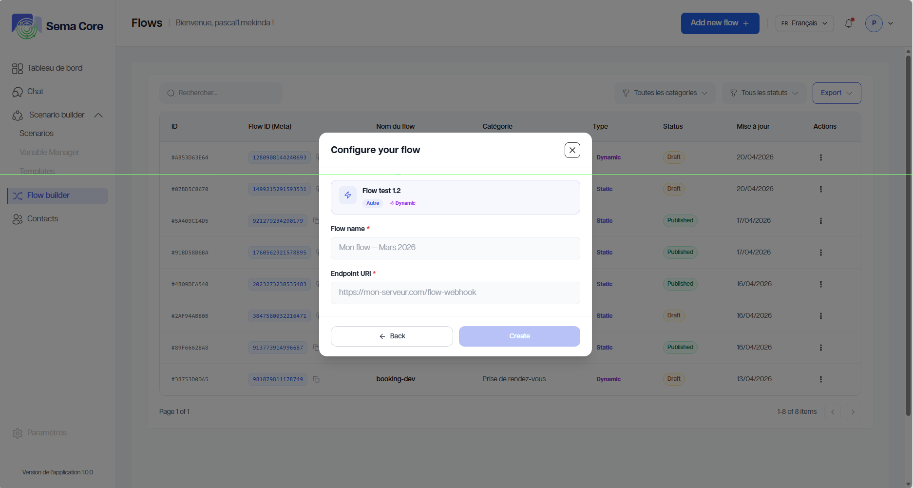
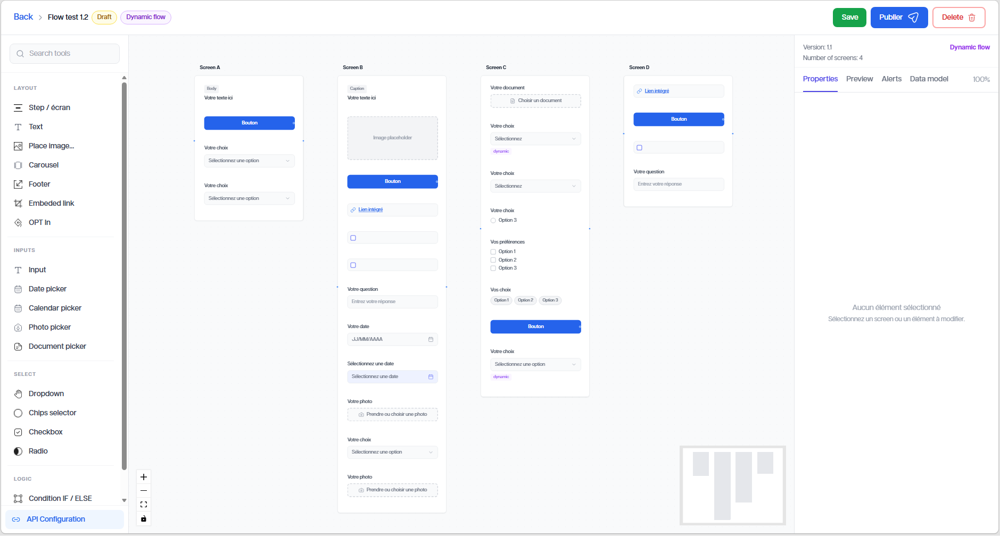
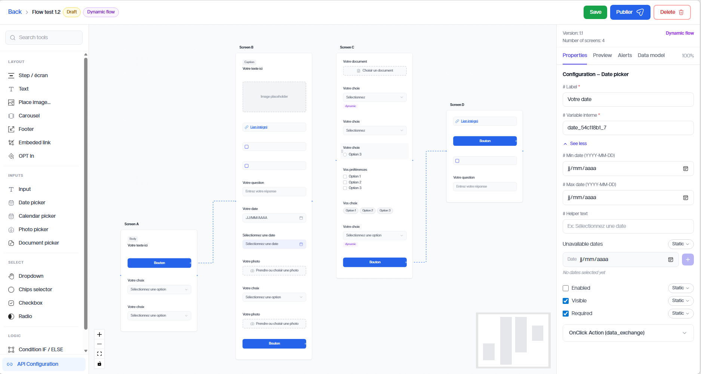
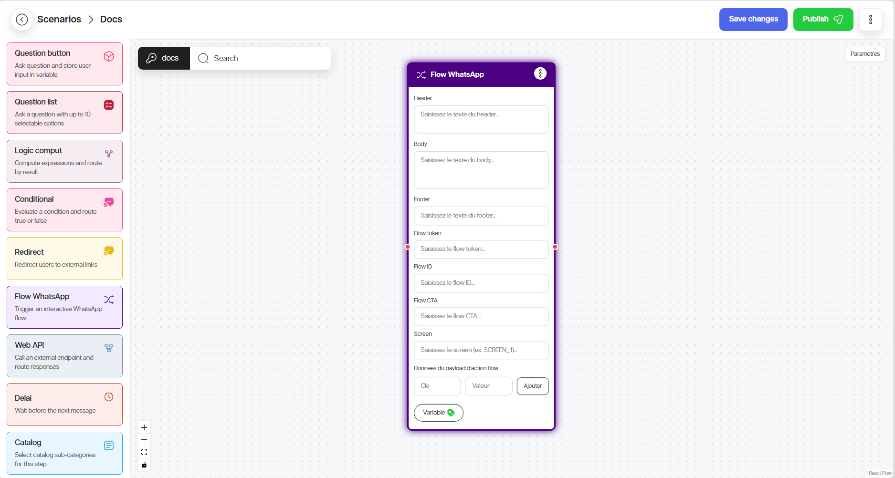

Flow Builder
Le Flow Builder permet de créer des parcours structurés. Il est utilisé lorsque l’utilisateur doit suivre plusieurs étapes organisées, par exemple un formulaire, une inscription, une demande de rendez-vous ou une collecte d’informations.
Objectif du module
Le Flow Builder permet de :
Créer un parcours guidé ;
Organiser des écrans ou étapes ;
Collecter des données structurées ;
Connecter le flow à un scénario ;
Réutiliser les réponses dans le chatbot.
Améliorer l’expérience utilisateur grâce à un parcours clair et fluide.
Simplifier la collecte d’informations complexes.
Permettre des interactions plus riches que les simples messages.
Offrir une interface visuelle pour concevoir les parcours.
Tester facilement les parcours avant publication.
Étape 1 — Ouvrir Flow Builder
1. Connectez-vous à Sema Core.
2. Cliquez sur Flow Builder.
3. Ouvrez un flow existant ou cliquez sur Créer.
{kind=link}

Étape 2 — Créer un flow
On peut créer un flow à partir de zéro ou à partir d’un modèle.
A partir de zéro :
1. Cliquez sur Créer un flow.
2. Donnez un nom clair au flow.
3. Définissez la catégorie.
4. Définissez le type du flow.
5. Entrez l’Endpoint du flow.
Exemples de noms :
Inscription client;Réservation rendez-vous;Collecte informations commande;Formulaire de satisfaction.
{kind=link}

A partir d’un modèle :
1. Cliquez sur Utiliser un modèle.
2. Choisissez un modèle dans la liste.
3. Donnez un nom au flow.
4. Définissez le Endpoint du flow.
5. Enregistrez le flow.
{kind=link}

Étape 3 — Ajouter les étapes ou écrans
Un flow est généralement composé de plusieurs écrans ou étapes.
Pour chaque étape :
1. Ajoutez un écran.
2. Donnez un titre compréhensible.
3. Ajoutez les champs nécessaires.
4. Définissez les champs obligatoires.
5. Organisez les éléments dans l’ordre logique.
6. Vérifiez le bouton de passage à l’étape suivante.
{kind=link}

Étape 4 — Configurer les champs
Les champs permettent de collecter des informations.
Types de champs possibles selon la configuration :
texte
numéro ;
choix simple ;
choix multiple ;
date ;
téléphone ;
e-mail ;
zone de texte ;
liste déroulante.
Pour configurer un champ :
1. Ajoutez le champ dans l’écran.
2. Renseignez son libellé.
3. Définissez s’il est obligatoire.
4. Ajoutez une aide si nécessaire.
5. Vérifiez le nom technique ou la variable associée.
{kind=link}

Étape 5 — Connecter le flow au Scenario Builder
Un flow peut être lancé depuis un scénario grâce au nœud Flow WhatsApp.
1. Ouvrez le scénario concerné.
2. Ajoutez le nœud Flow WhatsApp.
3. Renseignez le Flow ID.
4. Renseignez le Flow Token.
5. Configurez le texte d’introduction.
6. Définissez le bouton d’appel à l’action.
7. Enregistrez les données retournées dans une variable.
8. Testez le parcours complet.
{kind=link}

Étape 6 — Tester le flow
Avant publication :
1. Lancez le flow avec un contact de test.
2. Remplissez tous les champs.
3. Testez les champs obligatoires.
4. Vérifiez les messages d’erreur.
5. Soumettez le flow.
6. Vérifiez que les données sont récupérées dans le scénario.
Bon à savoir
Astuce
Un flow doit rester court et clair. Si le parcours contient trop d’étapes, l’utilisateur risque d’abandonner avant la fin.